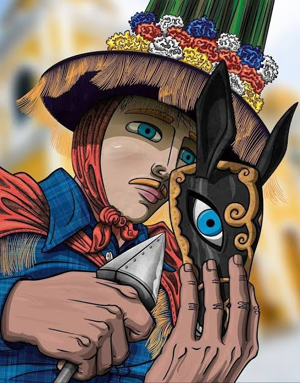
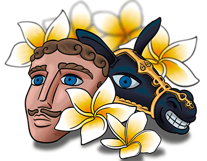
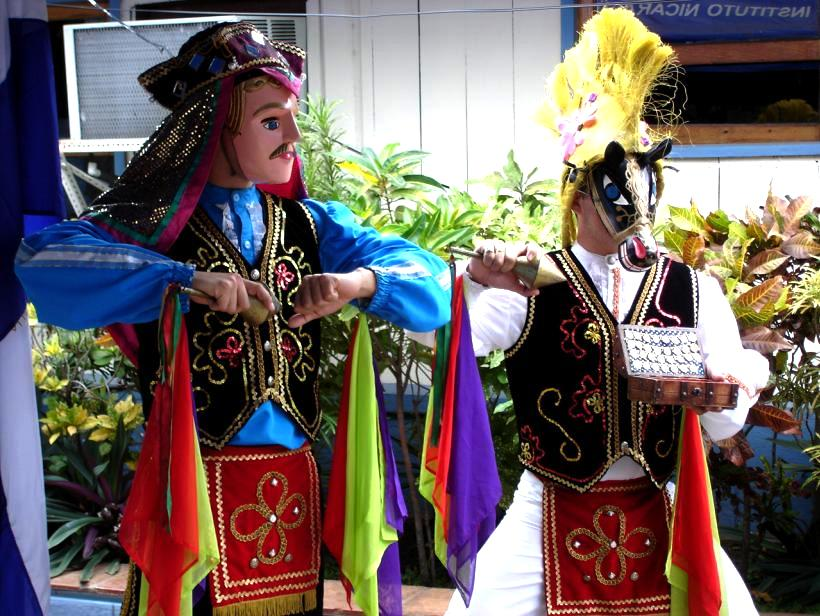
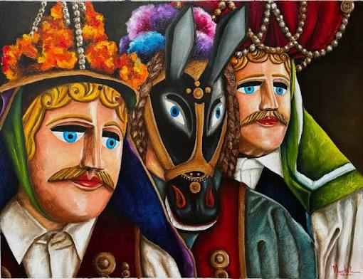
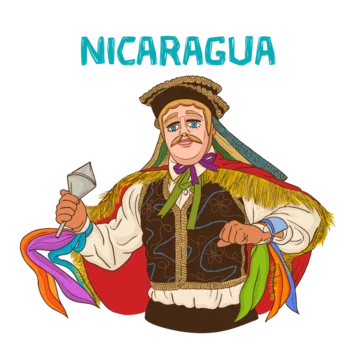

Origen e Historia
El Güegüense (conocido también como Macho Ratón) es una obra dramática, satírica y musical del siglo XVII[cite: 1]. Es la primera expresión teatral y literaria de Nicaragua y una de las obras coloniales más representativas de toda América Latina[cite: 1]. En 2005, la UNESCO la proclamó Patrimonio Inmaterial de la Humanidad[cite: 1, 2].
Nació en el pacífico nicaragüense (principalmente asociado a Diriamba, Carazo)[cite: 2]. Fue redactada por un autor anónimo en una mezcla de español y náhuatl colonial, concebida como un teatro callejero que se representaba frente a las autoridades españolas sin que estas comprendieran del todo su mensaje de protesta[cite: 1].


Resumen: ¿De qué trata la obra?
La trama gira en torno a El Güegüense, un viejo y astuto comerciante ambulante que viaja junto a sus dos hijos (Don Forcico y Don Ambrosio) y sus bestias de carga ("machos") vendiendo mercancías por los caminos reales del pacífico colonial.
El conflicto central se desencadena cuando el Gobernador Tastuanes le exige el pago de impuestos y tributos comerciales. Para evitar pagar un solo centavo, el viejo recurre a una brillante estrategia de resistencia: fingir sordera, cambiar las palabras con picardía, dar respuestas disparatadas y presumir riquezas falsas.
Al final, mediante enredos y negociaciones satíricas sobre un matrimonio arreglado, El Güegüense logra burlar por completo a la autoridad española, coronando su victoria con música y baile.
Galería Representativa
Imágenes emblemáticas del vestuario, las máscaras y los personajes tradicionales.



¿Cómo se baila la Danza del Güegüense?
El baile combina elegancia colonial, zapateado aborigen y movimientos jocosos.
La danza consta de 14 sones tradicionales ejecutados con violín, guitarra, guitarrilla y tambor (atabal). Cada personaje posee un ritmo y un estilo de baile particular:
- El Abanico y el Chinchín: El Güegüense y los españoles portan un abanico de plumas y sonajas de metal (chinchines) para marcar el compás.
- El Trote de los Machos: Los bailarines con máscaras de equinos trotan, brincan y chocan entre sí simulando la fuerza de las bestias de carga.
- Reverencias y Sordera Mímica: Los diálogos van acompañados de gestos exagerados donde el viejo finge no escuchar al Gobernador.
Lectura y Diálogos Completos de la Obra
Escucha la narración detallada, los parlamentos y la riqueza del guión literario original.
La obra destaca por sus diálogos escritos en parlamentos satíricos y repetitivos. Escuchar la lectura completa permite apreciar la astucia del dialecto, los dobles sentidos y el constante juego lingüístico entre el español y el náhuatl colonial con el que El Güegüense evade a las autoridades.
Representación Teatral Completa
Disfruta de la escenificación completa en vivo con vestuario, diálogos y bailes tradicionales.
Esta puesta en escena muestra la obra dramática completa en su formato de teatro callejero. Observa el desarrollo completo de la historia: las exigencias del Gobernador Tastuanes, las discusiones entre los hijos Don Forcico y Don Ambrosio, y la victoria final del viejo comerciante.
Datos Curiosos que Quizás No Sabías
Detalles fascinantes sobre la cultura, los secretos y la historia de la obra.
El Idioma "Mangue" o Nahuñol
La obra está redactada en una mezcla lingüística única entre el español colonial y el náhuatl, conocida entre historiadores como "nahuñol" para burlar a las autoridades.
La Estrategia de la Sordera
El Güegüense utiliza la "sordera fingida" como táctica de resistencia. Cuando el Gobernador le exige impuestos, el viejo responde con juegos de palabras y malentendidos ingeniosos.
Máscaras con Rasgos Marcados
Las máscaras de madera reflejan las clases sociales: los españoles tienen ojos azules, bigotes y piel clara; mientras que los mestizos e indígenas tienen rasgos locales o de bestias.
Sombreros de Plumas de Pavo Real
Los sombreros altos adornados con plumas de pavo real y cintas de colores simbolizan la riqueza colonial y la vistosidad del ave ancestral.
Reparto Históricamente Masculino
En la época colonial, todos los papeles (incluso los femeninos como Doña Suche Malinche) eran representados únicamente por hombres disfrazados.
Cuna en Carazo
Aunque es un símbolo nacional de toda Nicaragua, las representaciones más tradicionales y arraigadas se celebran cada mes de enero en Diriamba, Carazo[cite: 2].
Personajes Principales y Reparto
- El Güegüense: Protagonista astuto, comerciante ambulante que presume riquezas imaginarias.
- El Gobernador Tastuanes: Autoridad colonial española que intenta cobrar impuestos sin éxito.
- Don Forcico: Hijo leal y cómplice del Güegüense que sigue las burlas de su padre.
- Don Ambrosio: Hijo ilegítimo que desmiente las mentiras del Güegüense ante el Gobernador.
- Doña Suche Malinche: Hija del Gobernador ofreciendo matrimonio como parte de las negociaciones.
- Los Machos (Macho Moto, Macho Viejo, Macho Guajaqueño): Bestias de carga que acompañan al comerciante.
Elementos Culturales: Música, Danza, Vestuario y Máscaras
La combinación de estos cuatro componentes convierte a la obra en una comedia bailete única en el mundo.
Elementos Musicales
La obra cuenta con 14 sones musicales tradicionales interpretados instrumentalmente con violín de talalate, guitarra, guitarrilla y tambor (atabal).
Las Danzas
Fusión de zapateados rítmicos aborígenes con cortesías coloniales y el característico trote brincado de "Los Machos".
Los Vestuarios
Trajes coloridos con capas de encaje, cintas, lentejuelas y sombreros somontanos altos decorados con plumas de pavo real y espejos.
Las Máscaras
Talladas en madera de talalate; las de españoles muestran ojos claros y bigotes, mientras las de mestizos reflejan rasgos festivos.
Significado Cultural e Identidad
Más allá de ser una simple comedia colonial, El Güegüense es considerado el arquetipo de la identidad y del carácter nicaragüense. Representa la viveza, la picardía, la creatividad y la habilidad de responder con humor ante las dificultades.
A través de la sátira, la obra demuestra cómo el pueblo mestizo e indígena logró defender su dignidad frente a la opresión del sistema colonial. Es un testimonio vivo de resistencia pacífica donde la inteligencia y la palabra superan a la fuerza militar y tributaria.